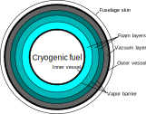

Fuel tanks
Liquid long-chain hydrocarbon fuel is assumed to be stored in the interior of the wings and no additional tanks are needed. The weight of the fuel is accounted for while sizing the wing structure. See structures.surfw.
However, alternate fuels such as cryogenic liquid hydrogen require additional storage tanks that are insulated pressure vessels.
Theory
üìñ Theory - Thermal and structural sizing of cryogenic fuel tanks
Thermal design
The fuel tanks in TASOPT are assumed to consist of circular cylinders with two hemiellipsoidal caps. There are two distinct layers: the tank itself, assumed to be made of an isotropic material with high thermal conductivity; and an insulation layer, which does not carry structural loads and has very low thermal conductivity. The insulation layer itself may consist of additional sublayers of different materials, forming a multi-layer insulation (MLI).

As the insulation layer consists of two different geometries across which heat can be transferred (the cylinder and the hemiellipsoids), two slightly different models for thermal resistance must be used. In the case of heat transfer across a layer between two concentric cylinders, it can be shown from Fourier's equation that the thermal resistance, $R_{cyl}$, is given by
\[ R_{cyl} = \frac{\ln\left( \frac{R_f}{R_0}\right)} {2\pi l_{cyl} k},\]
where $R_0$ is the layer's inner radius, $R_f = R_0 + t$ is the outer radius (with $t$ being the layer thickness), $l_{cyl}$ is the cylinder length, and $k$ is the thermal conductivity of the layer. For the hemiellipsoids, an approximate solution can be used, given by
\[ R_{ell} = \frac{t} {k \left(S_f + S_0 - \frac{S_{he}}{R^2} t^2\right)},\]
where $S_f$ is the surface area of the hemiellipsoid at the final radius, $S_0$ is the surface area at the initial radius, and $\frac{S_{he}}{R^2}$ is the ratio of hemiellipsoid surface area to radius squared; for example, this ratio is $\frac{S_{he}}{R^2}=2\pi$ for a hemisphere. The equation above makes use of the fact that there are two hemiellipsoids at both ends of the tank and represents their total resistance. By combining these resistances, the total resistance of a layer of MLI can be found using parallel resistance addition,
\[ R_{l} = \frac{R_{cyl}R_{ell}} {R_{cyl} + R_{ell}}.\]
In an MLI, the total resitance across the insulation is the serial addition of the resitances across each layer,
\[ R_{MLI} = \sum_i R_l^i.\]
In addition to the insulation resistance, the convective (from fuel to tank wall and from exterior wall to freestream) and radiative heat transfers have to be taken into account. The heat transfer to the freestream can be modeled as having two components: radiation and convection. The heat transfer coefficient from forced convection from the external wall to the freestream can be modeled using the Chilton-Colburn analogy,
\[ h_{convair} = \frac{c_f}{2 Pr^{2/3}} ρ u c_p,\]
where $c_f$ is the skin-friction coefficient, $Pr$ is the Prandtl number ($Pr\approx 0.71$ for air), $ρ$ is the freestream air density, $u$ is the freestream velocity, and $c_p$ is the specific heat of the freestream air at constant pressure. The skin-friction coefficient can be modeled using a flat-plate solution,[1]
\[ c_f = \frac{0.02296}{Re_x^{0.139}},\]
where $\mathrm{Re}_x$ is the Reynolds number at the location fo the fuel tank in the fuselage. To account for the effect of compressibility, the gas properties (density and viscosity) can be calculated at a reference temperature, $T^\star$, that can be estimated using [1]
\[ T^\star = T_a\left[0.5\left(1 + \frac{T_w}{T_a}\right)+0.16 r \left(\frac{\gamma-1}{2}\right)M^2\right],\]
where $M$ is the freestream Mach number, $T_a$ is the freestream temperature and $T_w$ is the external wall temperature. The term $r$ represents a recovery factor and $r = Pr^{1/3}$ for turbulent air. Due to the high flow velocity, the temperature that the wall reaches in the adiabatic case ($T_{aw}$) is greater than the static air temperature. The adiabatic wall temperature is given by
\[ T_{aw} = T_a \left(1 + r \frac{\gamma -1}{2} M^2\right),\]
where $\gamma$ is the ratio of specific heats for air.
Similarly, the radiative component has an equivalent heat transfer coefficient
\[ h_{rad} = σ ε (T_{aw}^2 + T_{w}^2) (T_{aw} + T_w),\]
where $σ$ is the Stefan-Boltzmann constant and $ε$ is the emissivity of the surface.
The equivalent heat transfer coefficient to the freestream air is $h_{air} = h_{convair}+h_{rad}$, such that the equivalent resistance is
\[ R_{air} = \frac{1}{h_{air} (2\pi l_{cyl} R_{fuse} +2 S_{he})},\]
where $l_{cyl}$ is the length of the cylindrical portion of the tank, $R_{fuse}$ is the fuselage radius and $S_{he}$ is the outer area of the hemiellipsoidal caps.
Inside the tank, there is a heat transfer from the bulk of the liquid fluid to the tank via natural convection. The Nusselt number for this heat transfer process can be modeled as [2]
\[ \mathrm{Nu}_l = 0.0605 \mathrm{Ra}_l^{1/3},\]
where $\mathrm{Ra}_l$ is the tank-length based Rayleigh number and is given by
\[ \mathrm{Ra}_l = \frac{g \beta (T_w-T_f) l^3 Pr}{\nu^2},\]
where $g$ is the gravitational acceleration, $\beta$ is the fuel's coefficient of thermal expansion, $T_w$ is the temperature at the tank wall, $l$ is the tank length, $Pr$ is the Prandlt number of the liquid fuel, $\nu$ is the kinematic viscosity of the fuel, and $T_f$ is the temperaure of the fuel. The thermal resistance due to natural convection is then
\[ R_{liq} = \frac{l}{\mathrm{Nu}_l k S_{int}},\]
where $k$ is the thermal conductivity of the liquid fuel and $S_{int}$ is the internal surface area of the tank.
The combined thermal resistance is $R_{eq} = R_{liq} + R_{MLI} + R_{air}$, such that the total heat transfer rate is $\dot{Q} = \frac{T_{aw} - T_f}{R_{eq}}$. Once the heat transfer rate is known, the boiloff rate is simply $\dot{m}_{boil}=\frac{\dot{Q}}{h_v}$, where $h_v$ is the heat of vaporization of the fuel. A diagram illustrating the different thermal resistances is shown below.

Notes on implementation
In the current version of TASOPT, the desired boiloff rate (in percentage per hour) is an input and the thicknesses of some desired layers of the MLI insulation are changed until the desired boiloff rate is met. The non-linear solver in NLsolve.jl is used to find the change in layer thickness needed to meet this requirement.
In general, the thermal conductivity of insulation materials is a function of temperature. In the code, the average of the conductivities at the interface of each layer is used to find the resistance of the layer; if the conductivity changes linearly with temperature, this method is exact. However, this calculation requires knowing the temperatures at every interface in the MLI layer. The nonlinear solver in NLsolve is used to find these temperatures and the overall heat transfer rate.
Structural design
The structural part of the tank is sized for a given pressure difference between the high-pressure interior and the exterior. As the boiling temperature of a liquid is a function of temperature, it is preferable to keep the interior pressure constant. If the desired pressure difference is $\Delta p$, the tank is actually designed for a pressure difference $\Delta p_{des} = \alpha \Delta p$, where $\alpha>1$ is a safety factor. The outer radius of the strcutrual portion of the tank is
\[ R_{t,o} = R_{fuse} - d_{fclear} - t_{MLI},\]
where $d_{fclear}$ is the fuselage clearance distance and $t_{MLI}$ is the total thickness of the MLI. The skin thickness of the cylindrical portion of the tank wall is sized using [3]
\[ t_{s,cyl} = \frac{2 \Delta p_{des} R_{t,o}}{2 \sigma_a f_{weld} + 0.8 \Delta p_{des}},\]
where $\sigma_a$ is the maximum allowable stress for the wall material and $f_{weld}<1$ is a factor that accounts for structural weakening due to welding. The wall thickness of the hemiellipsoidal caps is given by [3]
\[ t_{s,cap} = \frac{2 \Delta p_{des} R_{t,o} K }{2 \sigma_a f_{weld} + 2 \Delta p_{des} (K- 0.1)},\]
where $K=\frac{1}{6}(AR^2+2)$ is a factor that accounts for the ellipsoidal aspect ratio ($AR$). Once the wall thicknesses have been determined, the internal tank radius is given by $R_{t,i}=R_{t,o}-t_{s,cyl}$. The volume required for the fuel is
\[ V_{fuel} = (1+f_{ull})\frac{m_{fuel} + m_{boil}}{\rho},\]
where $m_{boil}$ is the total fuel mass that boils off during flight and $f_{ull}>0$ is a factor to account for the fact that the tank must contain some empty volume to account for ullage. The internal volume of a hemiellipsoidal cap is given by
\[ V_{cap} = \frac{2πR_{t,i}^3}{3AR}.\]
Therefore, the internal volume of the cylindrical portion of the tank is $V_{cyl}=V_{fuel}-2V_{cap}$, and the length of the cylindrical portion can then be found to be
\[ l_{cyl} = \frac{V_{cyl}}{\pi R_{t,i}^2}.\]
Once this length is known, the masses of the tank and insulation layers can be found from their respective volumes and densities.
TASOPT.structures.tanksize — Function tanksize(gee, rhoFuel, deltap,
Rfuse, dRfuse, hconvgas, Tfuel, z, Mair, xftank,
t_cond, time_flight, fstring,ffadd,
wfb, nfweb, sigskin, material_insul, rhoskin, Wfuel, threshold_percent, clearance_fuse, AR,
iinsuldes, ifuel, qfac)tanksize sizes a cryogenic fuel tank for a cryogenic-fuel aircraft
üîÉ Inputs and Outputs
**Inputs:**
- `gee::Float64`: Gravitational acceleration (m/s^2).
- `rhoFuel::Float64`: Density of fuel (kg/m^3).
- `deltap::Float64`: Allowed pressure difference in vessel (Pa).
- `Rfuse::Float64`: Fuselage radius (m).
- `dRfuse::Float64`: Accounts for flatness at the bottom of the fuselage (m).
- `hconvgas::Float64`: Convective coefficient of insulating purged gas (e.g., N2) (W/m2*K).
- `Tfuel::Float64`: Fuel temperature (K).
- `z::Float64`: flight altitude (m)
- `Mair::Float64`: external air Mach number
- `xftank::Float64`: longitudinal coordinate of fuel tank centroid from nose (m)
- `t_cond::Vector{Float64}`: Thickness array t (m) for each MLI layer.
- `time_flight::Float64`: total flight time (s)
- `fstring::Float64`: mass factor to account for stiffening material.
- `ffadd::Float64`: Additional mass factor for the tank.
- `wfb::Float64`: parameter for multi-bubble configuration.
- `nfweb::Float64`: Number of bubbles.
- `sigskin::Float64`: Material property.
- `material_insul::Vector{String}`: material name for each MLI layer.
- `rhoskin::Float64`: Material property.
- `Wfuel::Float64`: Weight of fuel (N).
- `threshold_percent::Float64`: Max allowed percentage of fuel that is allowed to boil off (%/hour).
- `clearance_fuse::Float64`: Clearance for the fuselage (m).
- `AR::Float64`: Aspect ratio.
- `iinsuldes::Vector{Int64}`: indices for insulation layers to be sized.
- `ifuel::Int64`: fuel index.
- `qfac::Float64`: Factor to multiply heat tranfer rate by to account for heat leakae through structure, piping, etc
**Outputs:**
- `Wtank_total::Float64`: Total weight of the tank including fuel (N).
- `thickness_insul::Float64`: Total thickness of the insulation (m).
- `lshell::Float64`: Length of the tank (m).
- `mdot_boiloff::Float64`: Mass boiled off during the mission flight (kg).
- `Vfuel::Float64`: Volume of fuel (m^3).
- `Wfuel_tot::Float64`: Weight of fuel (N).
- `m_boiloff::Float64`: Mass boiled off (kg).
- `tskin::Float64`: Thickness of the tank's skin (m).
- `t_head::Float64`: Thickness of the tank's head (m).
- `Rtank::Float64`: Radius of the tank (m).
- `Whead::Float64`: Weight of the tank's head (N).
- `Wcyl::Float64`: Weight of the tank's cylinder (N).
- `Winsul_sum::Float64`: Sum of the insulation weight (N).
- `Winsul::Float64`: Weight of insulation (N).
- `l_tank::Float64`: Length of the tank (m).
- `Wtank::Float64`: Weight of the tank structure (N).See here.
TASOPT.structures.tankWmech — Function tankWmech(gee, ρfuel,
ftankstiff, ftankadd, Δp,
Rfuse, dRfuse, wfb, nfweb,
sigskin, rho_insul, rhoskin,
Wfuel, m_boiloff, t_cond, clearance_fuse, AR)tankWmech calculates the weight of the cryogenic fuel tank for a LH-fueled aircraft.
üîÉ Inputs and Outputs
Inputs:
gee::Float64: Gravitational acceleration (m/s^2).ρfuel::Float64: Fuel density (kg/m^3).ftankstiff::Float64: Tank stiffness factor.ftankadd::Float64: Additional mass factor for the tank.Δp::Float64: Pressure difference (Pa).Rfuse::Float64: Fuselage radius (m).dRfuse::Float64: Subtraction factor accounting for fuselage flatness (m).wfb: Parameters for multiple-bubble configuration.nfweb: Number of bubbles.sigskin::Float64: Material property.material_insul::Array{String,1}: material name for each MLI layer.rhoskin::Float64: Material property.Wfuel::Float64: Weight of fuel (N).m_boiloff::Float64: Mass boiled off during the mission flight (kg).t_cond::Array{Float64,1}: Thickness of insulation layers (m).clearance_fuse::Float64: Clearance for the fuselage (m).AR::Float64: Aspect ratio.
Outputs:
Wtank_total::Float64: Total tank weight including fuel (N).l_cyl::Float64: Length of the cylindrical portion (m).tskin::Float64: Thickness of the tank's skin (m).Rtank_outer::Float64: Outer radius of the tank (m).Vfuel::Float64: Volume of fuel (m^3).Wtank::Float64: Weight of the empty tank (N).Wfuel_tot::Float64: Total weight of fuel (N).Winsul_sum::Float64: Sum of insulation weight (N).t_head::Float64: Thickness of the tank's head (m).Whead::Float64: Weight of the tank's head (N).Wcyl::Float64: Weight of the tank's cylinder (N).Winsul::Float64: Weight of insulation (N).Shead_insul::Float64: Insulated surface area of the head (m^2).l_tank::Float64: Total length of the tank (m).
NOTE: Al alloy 2219 has been recommended as tank material (from H2 tank paper in OneNote)
See here.
- 1Anderson, John. Fundamentals of Aerodynamics (SI units). McGraw Hill, 2011.
- 2Hochstein, J., H-C. Ji, and J. Aydelott. "Effect of subcooling on the on-orbit pressurization rate of cryogenic propellant tankage." 4th Thermophysics and Heat Transfer Conference. 1986.
- 3Barron, Randall F. "Cryogenic systems." Monographs on cryogenics (1985).